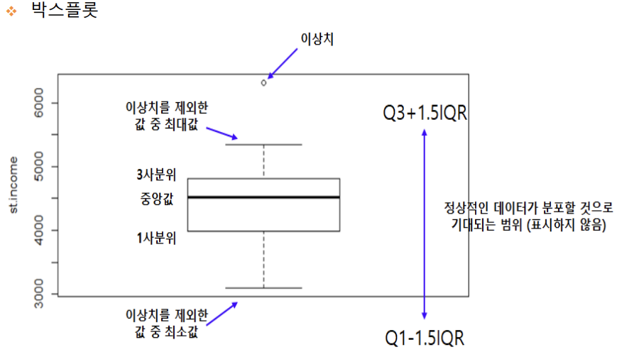

seaborn 라이브러리
- seaborn은 matplotlib의 기능과 스타일을 확장한 파이썬 시각화 도구의 고급 버전이다. 그리고 matplotlib으로 표현하기 힘든, 좀더 정교한 그래프를 지원하고 있다.
titanic Dataset
- seaborn 라이브러리에서 제공되는 'titanic' 데이터셋을 가져와서 다양한 그래프로 출력해 보자
- titanic 데이터셋에는 탑승객 891명의 정보가 담겨져 있다 .
1. 회귀선이 있는 산점도
- seaborn 모듈로 산점도를 그리기 위해서는 regplot() 함수를 이용한다 .
sns.regplot ( x = ‘age’ , # x축 변수
y = ‘fare’ , # y축 변수
data = titanic , # 데이터
ax = ax1 , # 1번째 그래프
fit_reg = True ) # 회귀선 표시
# To add a new cell, type '# %%'
# To add a new markdown cell, type '# %% [markdown]'
# %%
import matplotlib.pyplot as plt
import seaborn as sns
titanic = sns.load_dataset('titanic')
print(titanic.head())
# %%
sns.set_style('darkgrid')
fig=plt.figure(figsize=(15,5))
ax1 = fig.add_subplot(1, 2, 1)
ax2 = fig.add_subplot(1, 2, 2)
sns.regplot(x='age', y='fare', data=titanic, ax=ax1, fit_reg=True)
sns.regplot(x='age', y='fare', data=titanic, ax=ax2, fit_reg=False)
plt.show()
2. 범주형 데이터의 산점도
- 범주형 변수 (class, age) 에 들어 있는 각 범주별 데이터의 분포를 시각화 하는 방법이다.
- 범주형 데이터의 사점도를 그릴때에는
stripplot(),swarmplot()을 사용한다. swarmplot()은 데이터의 분산까지 고려하고, 데이터 포인트가 서로 중복되지 않도록 그래프를 그린다. 데이터가 퍼져있는 정도를 입체적으로 볼수 있다.
1) 이산형 변수의 분포
- 데이터 분산 미고려
sns.stripplot(x="class", # x축 변수
y="age", # y축 변수
data=titanic, # 데이터셋 - 데이터프레임
ax=ax1) # axe 객체 - 1번째 그래프
2) 이산형 변수의 분포
- 데이터 분산 고려 (중복 X)
sns.swarmplot(x="class", # x축 변수
y="age", # y축 변수
data=titanic, # 데이터셋 - 데이터프레임
ax=ax2) # axe 객체 - 2번째 그래프
# To add a new cell, type '# %%'
# To add a new markdown cell, type '# %% [markdown]'
# %%
import matplotlib.pyplot as plt
import seaborn as sns
titanic = sns.load_dataset('titanic')
print(titanic.head())
# %%
sns.set_style('darkgrid')
fig=plt.figure(figsize=(15,5))
ax1 = fig.add_subplot(1, 2, 1)
ax2 = fig.add_subplot(1, 2, 2)
sns.stripplot(x='class', y='age', data=titanic, ax=ax1)
sns.swarmplot(x='class', y='age', data=titanic, ax=ax2)
ax1.set_title('Strip plot')
ax2.set_title('Swarm plot')
plt.show()
3. 히스토그램
1) 히스토그램가 커널 밀도 함수
- 하나의 변수 데이터의 분포를 확인할 때, 주로 히스토그램과 커널 밀도 함수로 시각화하며, seaborn 모듈로 히스토그램과 커널 밀도 함수를 그리기 위해서는
distplo()을 이용한다. - 커널 밀도 함수는 그래프와 x축 사이의 면적이 1이 되도록 그리는 밀도 분포 함수 이다.
2) 기본값 : 히스토그램 + 커널밀도함수
sns.distplot(titanic['fare'], ax=ax1)
3) hist=False : 커널밀도함수
sns.distplot(titanic['fare'], hist=False, ax=ax2)
4) kde=False : 히스토그램
sns.distplot(titanic['fare'], kde=False, ax=ax3)
# To add a new cell, type '# %%'
# To add a new markdown cell, type '# %% [markdown]'
# %%
import matplotlib.pyplot as plt
import seaborn as sns
titanic = sns.load_dataset('titanic')
print(titanic.head())
# %%
sns.set_style('darkgrid')
fig=plt.figure(figsize=(15,5))
ax1 = fig.add_subplot(1, 3, 1)
ax2 = fig.add_subplot(1, 3, 2)
ax3 = fig.add_subplot(1, 3, 3)
sns.distplot(titanic['fare'], ax=ax1)
sns.distplot(titanic['fare'], hist=False, ax=ax2)
sns.distplot(titanic['fare'], kde=False, ax=ax3)
ax1.set_title('titanic fare - hist/ked') # 히스토그램 / 커널밀도함수
ax2.set_title('titanic fare - ked') # 커널밀도함수
ax3.set_title('titanic fare - hist') # 히스토그램
plt.show()
# 히스토그램과 커널 밀도 함수의 결과를 보면 타이타닉의 운임(fare)의 분포는 대부분 100달러 미만에 집중되어 있다.
4. 히트맵
- seaborn 라이브러리는 히트맵을 그리는
heatmap()을 제공한다. - 히트맵은 2개의 범주형 변수를 각각 x, y 축에 놓고 데이터를 매트릭스 형태로 분류한다.
# 피벗테이블로 범주형 변수를 각각 행, 열로 재구분하여 데이터프레임을 생성함
# aggfunc='size' 옵션은 데이터 값의 크기를 기준으로 집계한다는 의미
table = titanic.pivot_table(index=['sex'], columns=['class'], aggfunc='size')
# 히트맵 그리기
sns.heatmap(table, # 데이터프레임
annot=True, fmt='d', # 데이터 값 표시 여부, 정수형 포맷
cmap='YlGnBu', # 컬러 맵
linewidth=.5, # 구분 선
cbar=False) # 컬러 바 표시 여부
# To add a new cell, type '# %%'
# To add a new markdown cell, type '# %% [markdown]'
# %%
import matplotlib.pyplot as plt
import seaborn as sns
titanic = sns.load_dataset('titanic')
print(titanic.head())
# %%
# 피벗 테이블로 범주형 변수를 각각 행, 열로 재구분하여 데이터프레임을 생성함.
# aggfunc='size' 옵션은 데이터 값의 크기를 기준으로 집계한다는 의미
table=titanic.pivot_table(index=['sex'], columns=['class'], aggfunc='size')
# %%
sns.set_style('darkgrid')
sns.heatmap(table, # 데이터 프레임
annot=True, # 데이터값 표시여부
fmt='d', # 정수형 포맷
cmap='YlGnBu', # 컬러 맵
linewidth=.5, # 구분 선 두께
cbar=False) # 컬러 바 표시 여부
plt.show()
# 히트맵의 결과를 보면 남자 승객수가 여자 승객수보다 많은 편이다.
# 특히 3등석 남자 승객수가 여자 승객수보다 압도적응로 많다는 것을 알 수 있다.
5. 막대 그래프
- seaborn 라이브러리는 막대 그래프를 그리귀 위해
barplot()을 제공한다.
1) x축, y축에 변수 핛당
sns.barplot(x='sex', y='survived', data=titanic, ax=ax1)
2) x축, y축에 변수 핛당하고, hue 옵션 추가하여 누적 출력순으로 출력
sns.barplot(x='sex', y='survived', hue='class', data=titanic, ax=ax2)
3) x축, y축에 변수 핛당하고, dodge=False 옵션으로 1개의 막대 그래프로 출력
sns.barplot(x='sex', y='survived', hue='class', dodge=False, data=titanic, ax=ax3)
# To add a new cell, type '# %%'
# To add a new markdown cell, type '# %% [markdown]'
# %%
import matplotlib.pyplot as plt
import seaborn as sns
import platform
from matplotlib import font_manager, rc
if platform.system() == 'Darwin':
rc('font', family='AppleGothic')
elif platform.system() == 'Windows':
font_name = font_manager.FontProperties(fname="c:/Windows/Fonts/malgun.ttf").get_name()
rc('font', family=font_name)
# %%
# Seaborn 제공 데이터셋 가져오기
titanic = sns.load_dataset('titanic')
# 스타일 테마 설정 (5가지: darkgrid, whitegrid, dark, white, ticks)
sns.set_style('whitegrid')
# 그래프 객체 생성 (figure에 3개의 서브 플롯을 생성)
fig = plt.figure(figsize=(15, 5)) # 그래프 크기 설정
ax1 = fig.add_subplot(1, 3, 1) # 1행 3열 - 1번째 그래프
ax2 = fig.add_subplot(1, 3, 2) # 1행 3열 - 2번째 그래프
ax3 = fig.add_subplot(1, 3, 3) # 1행 3열 - 3번째 그래프
# x축, y축에 변수 핛당
sns.barplot(x='sex', y='survived', data=titanic, ax=ax1)
# x축, y축에 변수 할당하고, hue 옵션 추가하여 누적 출력순으로 출력
sns.barplot(x='sex', y='survived', hue='class', data=titanic, ax=ax2)
# x축, y축에 변수 할당하고, dodge=False 옵션으로 1개의 막대그래프로 출력
sns.barplot(x='sex', y='survived', hue='class', dodge=False, data=titanic, ax=ax3)
# 차트 제목 표시
ax1.set_title('titanic survived - sex')
ax2.set_title('titanic survived - sex/class')
ax3.set_title('titanic survived - sex/class(stacked)')
plt.show()
6. 빈도 막대 그래프
- seaborn 라이브러리는 빈도 막대그래프를 그리기 위해서 countplot() 함수를 제공
1) 기본 값 : palett='Set1' 로 색상 설정
sns.countplot(x='class', palett='Set1' data=titanic, ax=ax1)
2) hue 옵션에 'who' 추가 : who(man, woman, child) 각각 빈도 막대 그래프로 출력
sns.countplot(x='class', hue='who', palette='Set2', data=titanic, ax=ax2)
3) dodge=False 옵션 추가 (축 방향으로 분리하지 않고 누적 그래프 출력)
sns.countplot(x='class', hue='who', paletee=Set3', dodge=Fasle, data=titanic, ax=ax3)
# To add a new cell, type '# %%'
# To add a new markdown cell, type '# %% [markdown]'
# %%
import matplotlib.pyplot as plt
import seaborn as sns
import platform
from matplotlib import font_manager, rc
if platform.system() == 'Darwin':
rc('font', family='AppleGothic')
elif platform.system() == 'Windows':
font_name = font_manager.FontProperties(fname="c:/Windows/Fonts/malgun.ttf").get_name()
rc('font', family=font_name)
# %%
# Seaborn 제공 데이터셋 가져오기
titanic = sns.load_dataset('titanic')
print(titanic.info())
print(titanic.head())
# %%
# 스타일 테마 설정 (5가지: darkgrid, whitegrid, dark, white, ticks)
sns.set_style('dark')
# 그래프 객체 생성 (figure에 3개의 서브 플롯을 생성)
fig = plt.figure(figsize=(15, 5)) # 그래프 크기 설정
ax1 = fig.add_subplot(1, 3, 1) # 1행 3열 - 1번째 그래프
ax2 = fig.add_subplot(1, 3, 2) # 1행 3열 - 2번째 그래프
ax3 = fig.add_subplot(1, 3, 3) # 1행 3열 - 3번째 그래프
# 1번째 빈도 막대 그래프
# 1,2등석보다 3등석이 훨씬 많은 것을 알 수 있다.
sns.countplot(x='class', palette='Set1', data=titanic, ax=ax1)
# 2번째 빈도 막대 그래프
# 3등석에 남성의 비율이 높은 것을 알 수 있다.
sns.countplot(x='class', palette='Set2', hue='who', data=titanic, ax=ax2)
# 3번째 빈도 막대 그래프
# 1등석은 여성의 비율이 높고, 3등석은, 남성의 비율이 상대적으로 높은 것을 알 수 있다.
sns.countplot(x='class', palette='Set2', hue='who', dodge=False, data=titanic, ax=ax3)
# 차트 제목 표시
ax1.set_title('titanic class')
ax2.set_title('titanic class - who')
ax3.set_title('titanic class - who(stacked)')
plt.show()
7. 박스플롯 / 바이올린 그래프
- 박스플롯은 범주형 데이터 분포와 주요 통계 지표를 함께 제공한다.
- 박스플룻 만으로는 데이터가 퍼져있는 분산의 정도를 정확하게 알기 어렵기 때문에 커널 밀도함수를 y축 방향에 추가하여 바이올린 그래프로 출력할 수 있다.
- 박스플롯은
boxplot()함수로 그릴수 있고, 바이올린 그래프는violinplot()함수로 그릴 수 있다.
1) 박스 그래프 - 기본 값
sns.boxplot(x='alive', y='age', data=titanic, ax=ax1)
2) 박스 그래프 - hue = 'sex' 변수를 추가하여 남녀 데이터를 구분하여 출력
sns.boxplot(x='alive', y='age', hue='sex', data=titanic, ax=ax2)
3) 바이올린 그래프 - 기본값
sns.violinplot(x='alive', y='age', data=titanic, ax=ax3)
4) 바이올린 그래프 - hue='sex' 변수를 추가하여 남녀 데이터를 구분하여 출력
sns.violinplot(x='alive', y='age', hue='sex', data=titanic, ax=ax4)
# To add a new cell, type '# %%'
# To add a new markdown cell, type '# %% [markdown]'
# %%
import matplotlib.pyplot as plt
import seaborn as sns
import platform
from matplotlib import font_manager, rc
if platform.system() == 'Darwin':
rc('font', family='AppleGothic')
elif platform.system() == 'Windows':
font_name = font_manager.FontProperties(fname="c:/Windows/Fonts/malgun.ttf").get_name()
rc('font', family=font_name)
# %%
titanic = sns.load_dataset('titanic')
print(titanic.head())
# %%
# 스타일 테마 설정 (5가지: darkgrid, whitegrid, dark, white, ticks)
sns.set_style('darkgrid')
# 그래프 객체 생성 (figure에 4개의 서브 플롯을 생성)
fig = plt.figure(figsize=(15, 10)) # 그래프 크기 설정
ax1 = fig.add_subplot(2, 2, 1) # 2행 2열 - 1번째 그래프
ax2 = fig.add_subplot(2, 2, 2) # 2행 2열 - 2번째 그래프
ax3 = fig.add_subplot(2, 2, 3) # 2행 2열 - 3번째 그래프
ax4 = fig.add_subplot(2, 2, 4) # 2행 2열 - 4번째 그래프
# 1번째 - 박스 그래프 - 기본값
sns.boxplot(x='alive', y='age', data=titanic, ax=ax1)
# 2번째 - 박스 그래프
# 생존자 남자는 20~30대가 많고, 여자는 20~40대가 많을 것을 알 수 있다.
sns.boxplot(x='alive', y='age', data=titanic, ax=ax2, hue='sex')
# 3번째 - 바이올린 그래프
sns.violinplot(x='alive', y='age', data=titanic, ax=ax3)
# 4번째 - 바이올린 그래프
# 생존자는 남자는 30대가 가장 많이 분포 해 있고, 여자는 20~30대가 가장 많이 분포한 것을 알 수 있다.
sns.violinplot(x='alive', y='age', data=titanic, ax=ax4, hue='sex')
ax1.set_title('alive')
ax2.set_title('alive(sex)')
ax3.set_title('alive')
ax4.set_title('alive(sex)')
plt.show()

7. 조인트 그래프
- 조인트 그래프는
jointplot()함수로 산점도를 기본적으로 표시하고, x-y축에 각 변수에 대한 히스토그램을 동시에 보여주는 그래프이다. 따라서 두 변수의 관계와 데이터가 분산되어 있는 정도를 한눈에 파악하기 좋은 그래프 이다.
1) 조인트 그래프 - 산점도 기본값
j1 = sns.jointplot(x='fare', y='age', data=titanic)
2) 조인트 그래프 - 회귀선 : kind='reg'
j2 = sns.jointplot(x='fare', y='age', kind='reg', data=titanic)
3) 조인트 그래프 - 육각 그래프 : kind='hex'
j3 = sns.jointplot(x='fare', y='age', kind='hex', data=titanic)
4) 조인트 그래프 - 커럴 밀집 그래프 : kind='kde'
j4 = sns.jointplot(x='fare', y='age', kind='kde', data=titanic)
# To add a new cell, type '# %%'
# To add a new markdown cell, type '# %% [markdown]'
# %%
import matplotlib.pyplot as plt
import seaborn as sns
import platform
from matplotlib import font_manager, rc
if platform.system() == 'Darwin':
rc('font', family='AppleGothic')
elif platform.system() == 'Windows':
font_name = font_manager.FontProperties(fname="c:/Windows/Fonts/malgun.ttf").get_name()
rc('font', family=font_name)
# %%
titanic = sns.load_dataset('titanic')
print(titanic.head())
# %%
sns.set_style('darkgrid')
# 1. 조인트 그래프 - 산점도(기본값)
j1 = sns.jointplot(x='fare', y='age', data=titanic)
# 2. 조인트 그래프 - 회귀선 kind=reg
j2 = sns.jointplot(x='fare', y='age', kind='reg', data=titanic)
# 3. 조인트 그래프 : 회귀선 kind=hex
j3 = sns.jointplot(x='fare', y='age', kind='hex', data=titanic)
# 4. 조인트 그래프 - 커럴 밀집 그래프 kind = 'kde'
j4 = sns.jointplot(x='fare', y='age', kind='kde', data=titanic)
# 차트 제목 표시
j1.fig.suptitle('titanic fare - scatter', size=15)
j2.fig.suptitle('titanic fare - reg', size=15)
j3.fig.suptitle('titanic fare - hex', size=15)
j4.fig.suptitle('titanic fare - kde', size=15)
plt.show()
9. 조건을 적용한 그래프
조건을 적용하여 화면을 그리드로 분할한 그래프
FaceGrid()함수는 행, 열 방향으로 서로 다른 조건을 적용하여 여러 개의 서브플롯 그래프를 그려주는 역할을 한다. 그리고 각 서브플롯에 적용할 그래프 종류는map()함수를 이용하여 그리드 객체에 전달한다.
1. 조건에 따라 그리드 나누기
- who(man, woman, child), survived (0 or 1)
g = sns.FacetGrid(data=titanic, col='who', row='survived')
2. 그래프 적용하기
- 히스토그램
g = g.map(plt.hist, 'age')
# To add a new cell, type '# %%'
# To add a new markdown cell, type '# %% [markdown]'
# %%
import matplotlib.pyplot as plt
import seaborn as sns
import platform
from matplotlib import font_manager, rc
if platform.system() == 'Darwin':
rc('font', family='AppleGothic')
elif platform.system() == 'Windows':
font_name = font_manager.FontProperties(fname="c:/Windows/Fonts/malgun.ttf").get_name()
rc('font', family=font_name)
# %%
titanic = sns.load_dataset('titanic')
sns.set_style('darkgrid')
# 조건에 따라 그리드 나누기 : who(man, woman, child), survived(0 과 1)
g = sns.FacetGrid(data=titanic, col='who', row='survived')
g = g.map(plt.hist,'age')
plt.show()
# 남성에 비해서 여성 생존자가 사애적으로 많은 편이고, 성인 중에서는 활동성이 좋은 20~40대의 생존자가 많은것으로 나타난다.
10. 데이터 분포 그래프
pairplot()함수는 인자로 전달되는 데이터프레임의 열을 두개씩 짝을 지을 수 있는 모든 조합에 대해서 그래프로 표현한다. 그래프를 그리기 위해서는 데이터의 개수만큼 짝의 개수만큼 화면을 그리도 나눈다.
1) titanic 데이터셋 중에서 분석 데이터 선택하기
titanic_pair = titanic[['age', 'pclass', 'fare']]
2) 조건에 따라 그리드 나누기 : 3행 3열 그리드로 출력
g = sns.pairplot(titanic_pair)
# To add a new cell, type '# %%'
# To add a new markdown cell, type '# %% [markdown]'
# %%
import matplotlib.pyplot as plt
import seaborn as sns
import platform
from matplotlib import font_manager, rc
if platform.system() == 'Darwin':
rc('font', family='AppleGothic')
elif platform.system() == 'Windows':
font_name = font_manager.FontProperties(fname="c:/Windows/Fonts/malgun.ttf").get_name()
rc('font', family=font_name)
# %%
titanic = sns.load_dataset('titanic')
sns.set_style('darkgrid')
titanic_pair = titanic[['age', 'pclass', 'fare']]
g = sns.pairplot(titanic_pair)
plt.show()
# 같은 변수끼리 짝을 이루는 대각선 방향은 히스토그램을 그리고 서로 다른 변수 간에는 산점도로 출력된다.